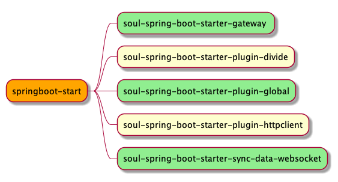
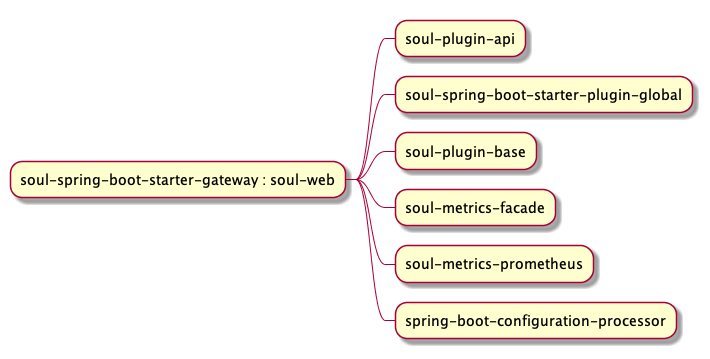
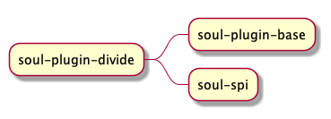
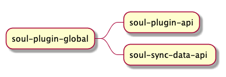
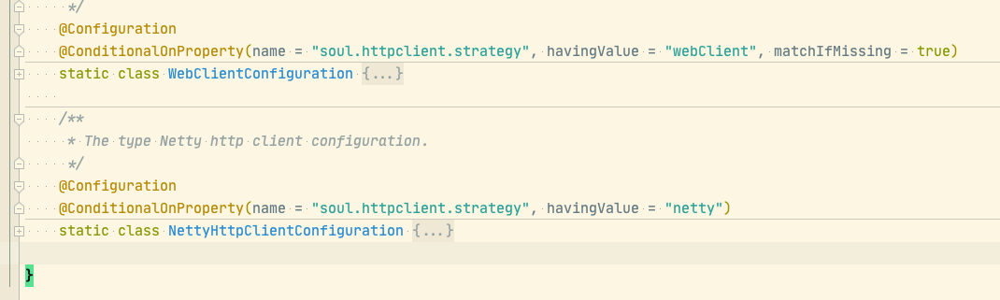
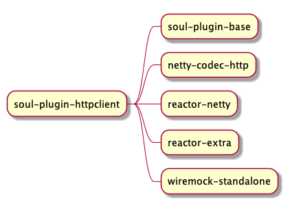
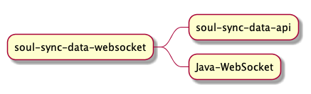

Soul 数据同步-Websocket初探
Table of Contents
1 soul-admin 侧的数据同步
在soul-admin启动时, DataSyncConfiguration 配置类会根据配置文件加载对应的同步策略
其内有4个内部类,分别对应4中数据同步策略

不同策略在初始化时,均会通过spring容器构建一个DataChangedListener的实现类,用于后续的事件监听
websocket同步策略除了注入一个DataChangedListener bean,还会分别注入 WebsocketCollector ServerEndpointExporter
WebsocketCollector 其实就是soul-admin通过websocket 与soul-bootstrasp数据交互的入口. 包括接受链接,同步消息,处理链接
错误信息等.
soul-admin 中业务层基本类似cms系统的增删改查功能,但是在数据变化的时候,均推送相应的事件

DataChangedEventDispatcher 里在对推送过来的事件,进行分门别类的处理.
2 soul-bootstrap
这块的逻辑调用功能目前还有点凌乱 待后续画图补充完善
2.1 引用基本start

2.2 各个start加入的配置
2.2.1 soul-spring-boot-starter-gateway 这个start中仅仅引入的是soul-web相关的包,相关的初始化工作 \\
其实是在soul-web中进行的。

2.2.2 soul-spring-boot-starter-plugin-divide
该start引入的是 soul-plugin-divide 包. 其中主要的依赖如下. 可以看到起引入了spi相关的包。

2.2.3 soul-spring-boot-starter-plugin-global
该start引入的事soul-plugin-global相关依赖,其内有个GlobalPluginConfiguration初始化类，
利用spring注入这三种bean SoulPlugin、SoulContextBuilder、MetaDataSubscriber

2.2.4 soul-spring-boot-starter-plugin-httpclient
该start引入的是soul-plugin-httpclient 的相关依赖,其中有HttpClientPluginConfiguration配置类，
其内部类WebClientConfiguration,NettyHttpClientConfiguration 分别可以指定不同的httpclient类型


2.2.5 soul-spring-boot-starter-sync-data-websocket
该start引入的是soul-sync-data-websocket，其内的WebsocketSyncDataConfiguration向spring中注入SyncDataService、WebsocketConfig
两种类型的bean

2.3 websocket 中同步
该模块使用 spring-boot-starter. 项目结构分层确实清晰明了.以下提到的spring-boot-starter简写starter-xx
在starter-sync-data-websocket中 WebsocketSyncDataConfiguration完成初始化,其参数分别来自其他的starter.
WebsocketConfig –> WebsocketSyncDataConfiguration.websocketConfig() PluginDataSubscriber –> starter-gateway –> soul-web –> SoulConfiguration–> CommonPluginDataSubscriber metaSubscribers,authSubscribers 为空后续同步的时候,添加数据.
WebsocketSyncDataService –> SoulWebsocketClient –>WebsocketDataHandler websocketSyncDataService
BaseDataCache subscribeDataHandler
3 springboot相关的bean,待完善学习
项目中有些bean的初始化是用到了spring框架的相关特性,但是知其然不知其所以然.
比如:DataChangedEventDispatcher.afterPropertiesSet方法是将所有的DataChangedListener实现类赋值给自己的属性listeners
随后进行业务操作.另外还有以下几个:
- ApplicationListener
- InitializingBean
- InstantiationAwareBeanPostProcessor
- ApplicationContextAware
- EnumMap
- LocalDataSourceLoader 中实现了项目的sql初始化操作. 因建库、建表的sql语句中均有
IF NOT EXISTS. 故不会重复创建表